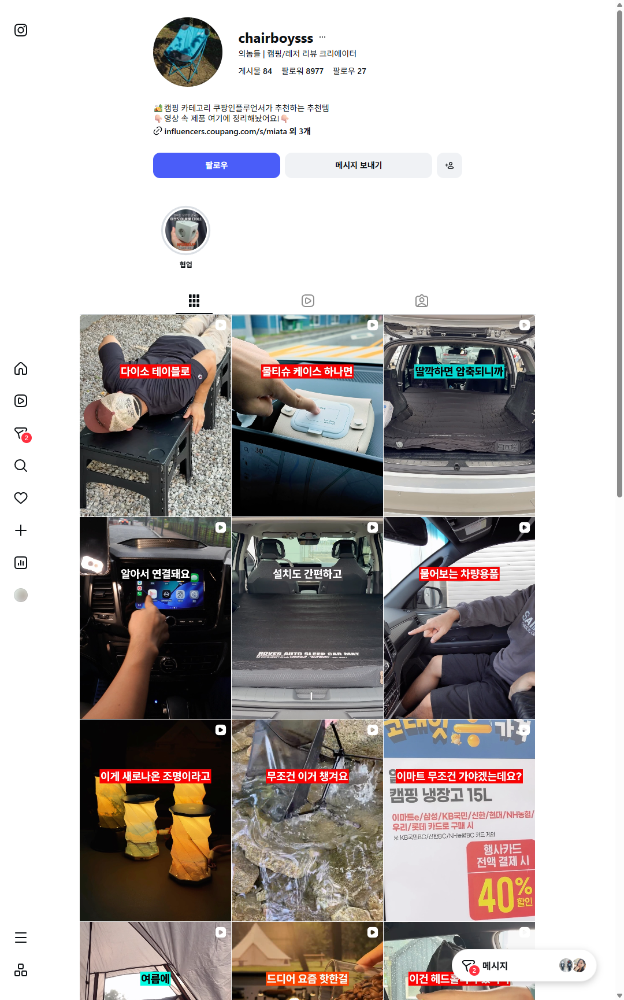
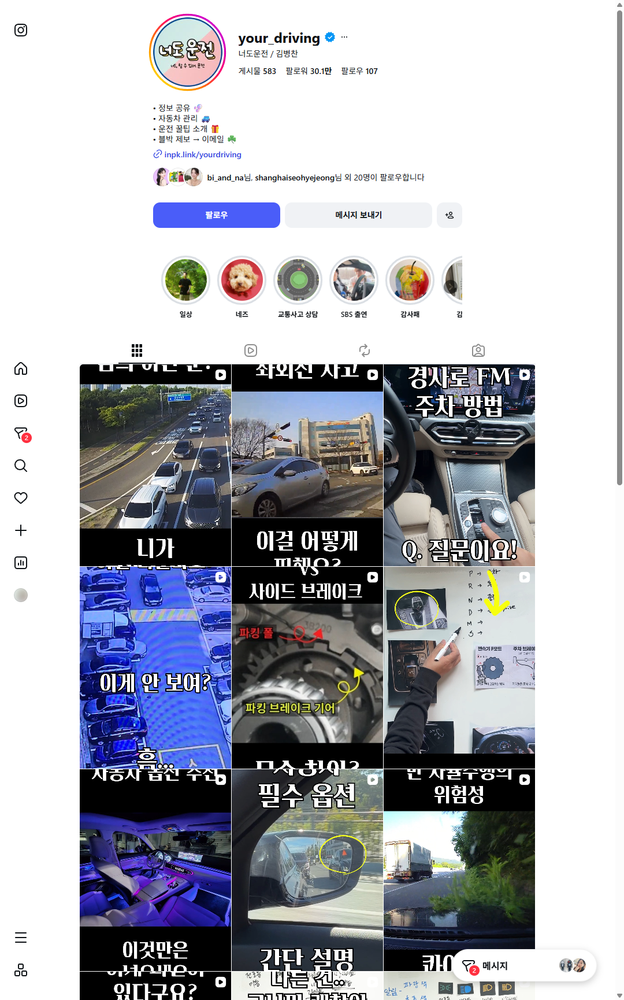
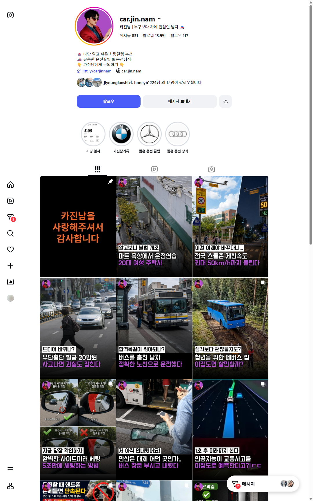
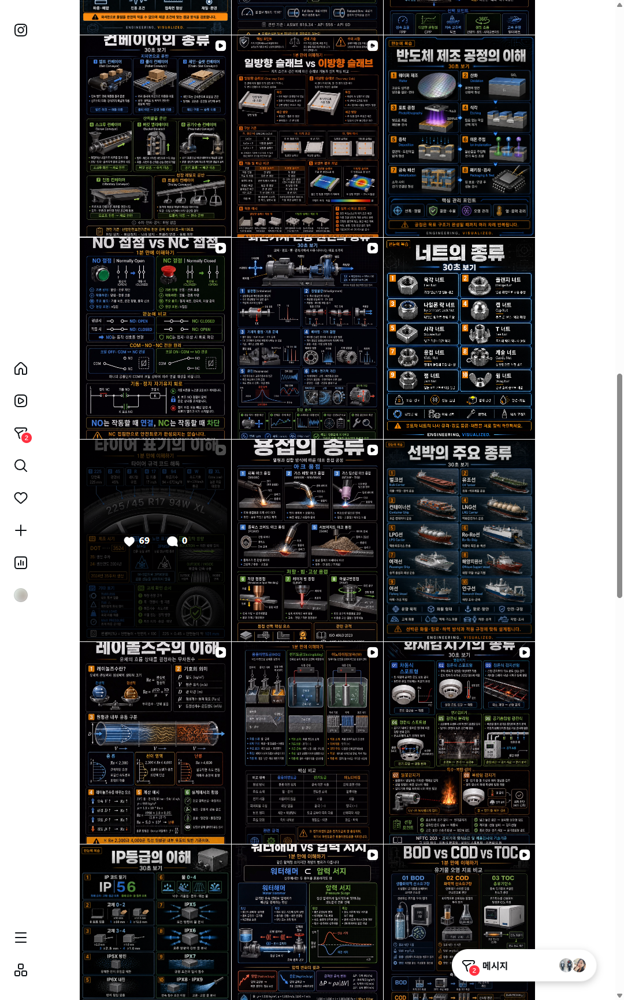

| 계정 | 성격 | 팔로워 | 게시물 | 최고 좋아요 | 중앙값 | 반응률* |
|---|---|---|---|---|---|---|
| @chairboysss 의놈들 | 차량·캠핑 용품 실사용 리뷰 (릴스) | 8,968 | 84 | 3,160 | 73 | 35.2% |
| @your_driving 너도운전 | 운전 상식·사고 해설 (릴스) | 302,000 | 583 | 6,016 | 1,584 | 2.0% |
| @car.jin.nam 카진남 | 자동차 뉴스·법규 카드뉴스 | 160,000 | 831 | 2,441 | 265 | 1.5% |
| @engineering_in_one 공학한장 | 부품·원리 1장 요약 (카드/릴스) | 24,000 | 216 | 262 | 64 | 1.1% |
* 반응률 = 최고 좋아요 ÷ 팔로워. 팔로워 9천짜리 계정이 30만 계정의 절반에 달하는 좋아요를 뽑는다는 점이 이번 분석의 출발점이다.
| 계정 | 게시물 | 좋아요 | 댓글 | 판정 |
|---|---|---|---|---|
| 너도운전 | 자동차 빨강색 경고등 정리 | 6,016 | 58 | 지금 내 계기판에 뜬 걸 해석해줌 |
| 의놈들 | EV3 차박 평탄화 보드 | 3,160 | 1,573 | 차종 특정 + 불편 해결 |
| 너도운전 | 유도선 안/바깥 사고 블박 | 2,842 | 543 | 나도 매일 겪는 상황 |
| 카진남 | 무단횡단 벌금보다 무서운 것 | 2,441 | 315 | 내 과실이 될 수 있는 상황 |
| 의놈들 | 벤딕트 무선 카플레이 동글 | 429 | 1,177 | 댓글이 좋아요의 2.7배 |
| 의놈들 | Temu 커피저울 (제휴코드) | 11 | 0 | 제휴 링크형 = 전멸 |
| 의놈들 | Temu 선풍기 (제휴코드) | 33 | 2 | 〃 |
| 공학한장 | 아스팔트 포장의 종류 | 26 | 0 | 내 문제가 아님 |
| 너도운전 | 자동차 기어·옵션 설명 4편 | 좋아요 비공개 | 성과 저조로 숨긴 것으로 추정 | |
제품 소개가 아니라 이미 벌어진 상황의 해석을 줄 때 터진다. 경고등, 사고 과실, 벌점은 전부 "내가 지금 답을 알아야 하는 것"이다.
"차량용품 3가지"보다 "EV3 차박할 때"가 20배 잘 나온다. 대상을 좁히면 도달은 줄어도 "이거 내 얘기다"가 폭발한다.
"댓글에 무선 남겨주세요" 한 줄이 댓글을 좋아요의 2.7배로 만든다. 반면 제휴코드를 본문에 박으면 즉시 죽는다.




※ 계정 4곳의 최근 게시물을 15개씩만, 요청 간 2.5초 간격을 두고 천천히 수집했다. 캡처 속 내 계정 정보는 ●●●●● 로 마스킹 처리함. 좋아요·댓글 수는 게시물 메타데이터 기준.